Highlighted Projects
Selected work showcasing field engineering, QA/QC, and infrastructure delivery support.
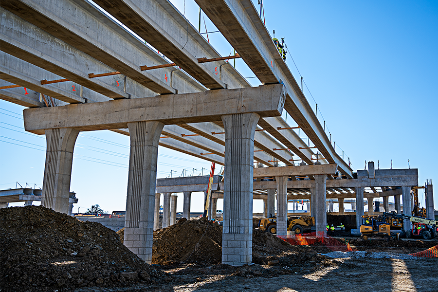
Bridge Construction Support
Supported reinforced concrete bridge activities including inspections, surveying coordination, and quality checks during critical construction phases.

Roadway Construction & Rehabilitation
Supported road delivery through surveying, inspections, and progress documentation for paved and gravel roadway works.
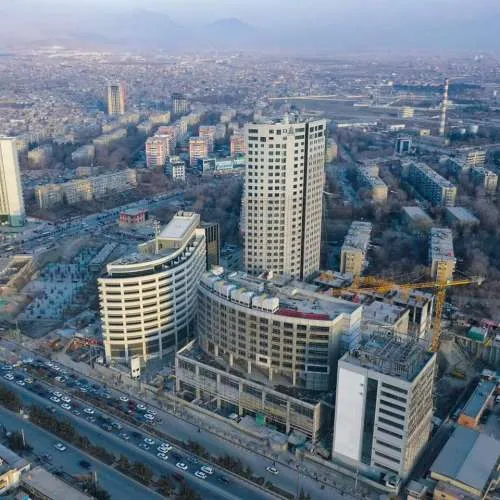
Multi-Storey RCC Buildings
Supervised reinforced concrete structural works, coordinated trades, and supported quality control across multiple buildings.
Bamyan–Baghlan (B2B) Road Construction Project
Large-scale transportation infrastructure project aimed at improving regional connectivity through mountainous terrain. Supported roadway delivery under complex environmental and site constraints.
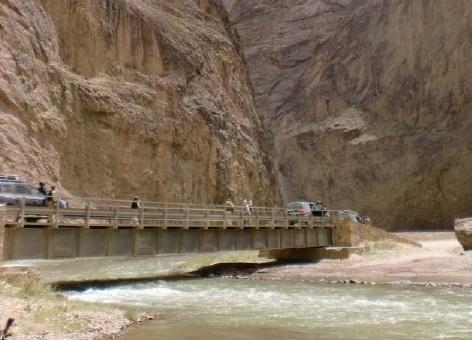
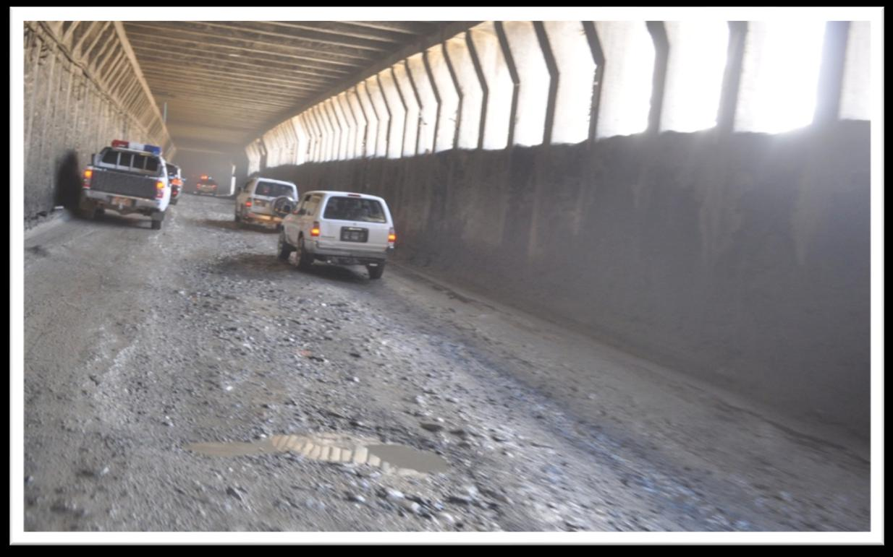
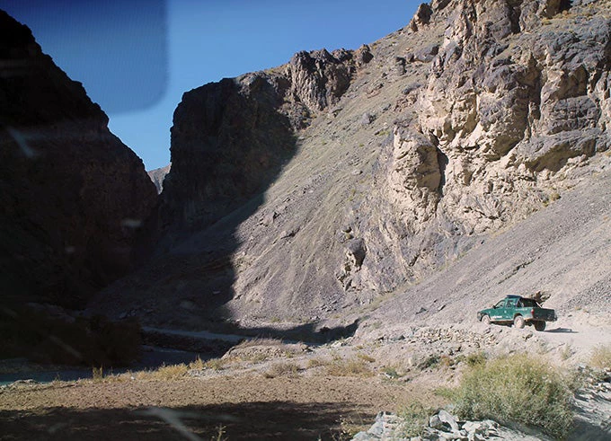
Scope & Responsibilities
- Supervised roadway works in mountainous and river-adjacent conditions (Segment 6)
- Coordinated controlled blasting operations and post-blast site clearance
- Oversaw retaining walls, drainage structures, protection works, and culverts
- Verified alignment, grades, and construction details against approved drawings
Engineering Judgment
- Applied durability-focused solutions in high-erosion areas (retaining wall selection & detailing)
- Planned sequencing around seasonal constraints to reduce risk and maintain progress
- Supported documentation and coordination across stakeholders and field teams
Research Center Complex Construction Project
Government-funded reinforced concrete facility delivered under strict public-sector procurement and quality controls. Supported structural execution, inspections, and coordination between site and design teams.
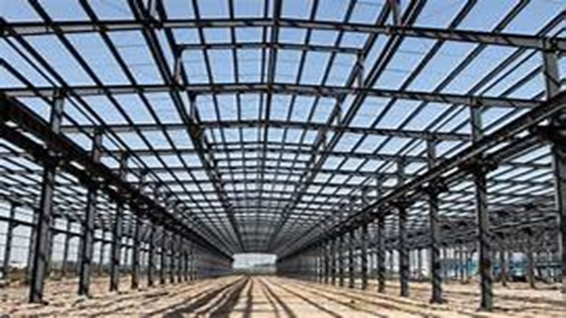
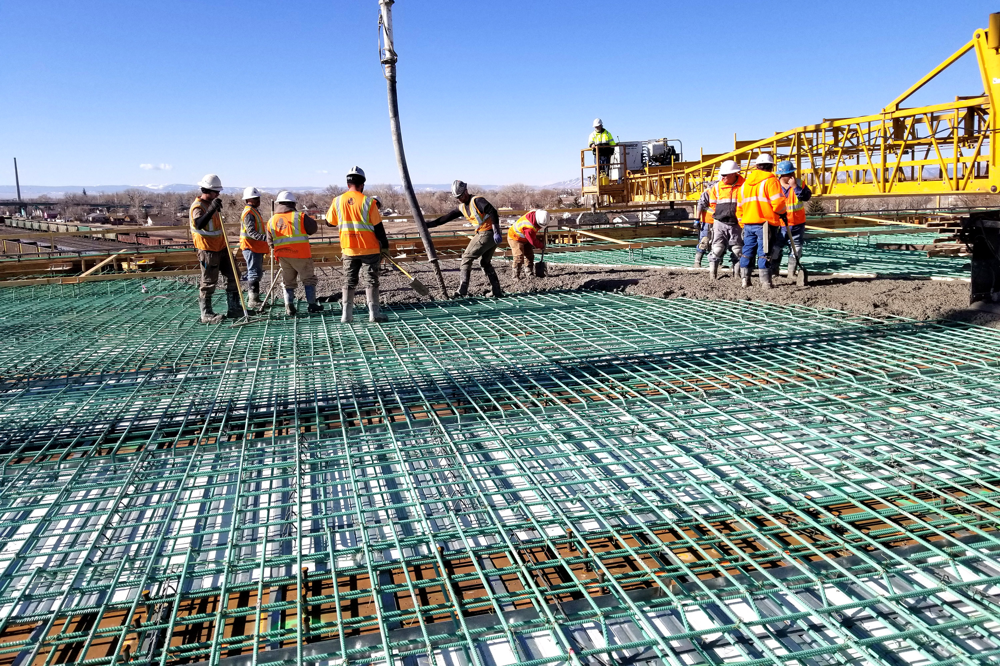
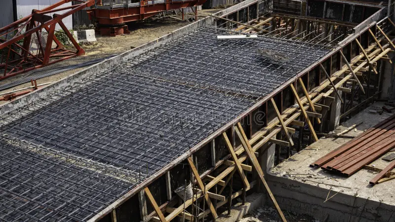
Scope & Responsibilities
- Supervised RCC works in accordance with approved structural drawings
- Prepared quantity take-offs and material estimates for structural elements
- Inspected reinforcement, formwork, and concrete placement for quality and compliance
- Maintained site documentation and supported technical coordination
Challenge & Resolution
- Addressed shortage of 10mm deformed rebar due to procurement constraints
- Supported a technically acceptable alternative with review/approval to prevent schedule delay
- Maintained structural intent while ensuring continuity of critical construction activities
Government Engineering & Curved Wall Construction
Active government-sector engineering project involving multi-layer construction execution, structural coordination, and quality-controlled delivery. The role required continuous site supervision, technical judgment, and close alignment with approved drawings, specifications, and public-sector standards.
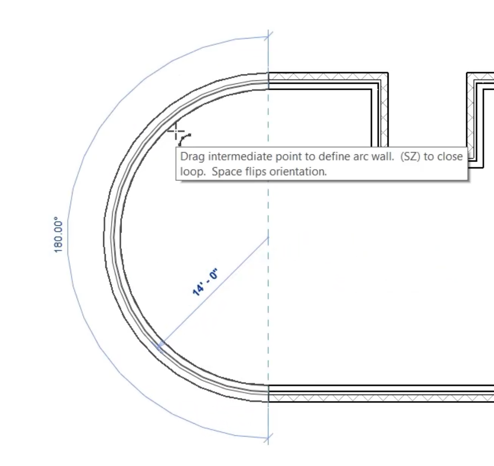
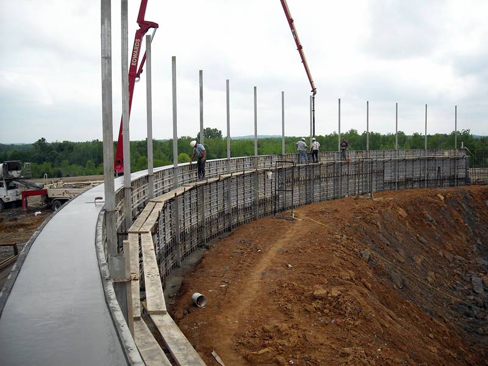
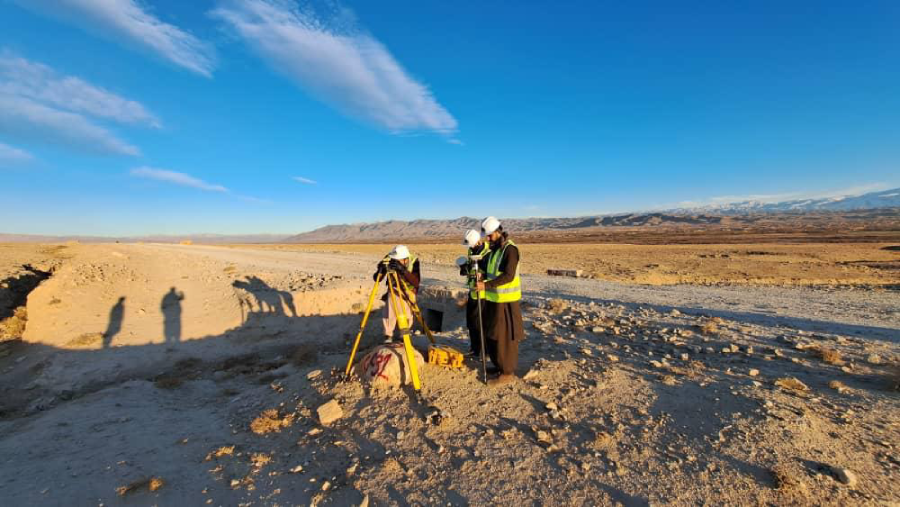
Scope & Responsibilities
- Supervised and coordinated multiple construction work layers on an active engineering site
- Ensured execution aligned with approved drawings, technical specifications, and project standards
- Managed on-site quality control, execution coordination, and site supervision across different construction phases
- Reviewed construction activities continuously to verify compliance with structural drawings and engineering requirements
- Provided technical input and recommendations to improve execution efficiency and reduce on-site issues
- Organized, monitored, and optimized construction workflows to support schedule and quality objectives
Curved Wall Construction & Technical Oversight
- Conducted technical assessment and supervision of curved wall construction, a geometrically sensitive structural element
- Identified risks related to axis deviation, alignment inaccuracies, and structural stability
- Implemented precise centerline control and measurement procedures to maintain geometric accuracy
- Coordinated progressive, controlled corrections during execution to prevent rework and structural deficiencies
- Ensured curved wall alignment met engineering and safety requirements through continuous monitoring
Technical Analysis & Engineering Judgment
- Participated in technical discussions and engineering evaluations related to structural behavior and execution methods
- Applied engineering judgment to analyze construction challenges and develop practical, site-based solutions
- Documented technical decisions, observations, and corrective actions for official project records and future reference